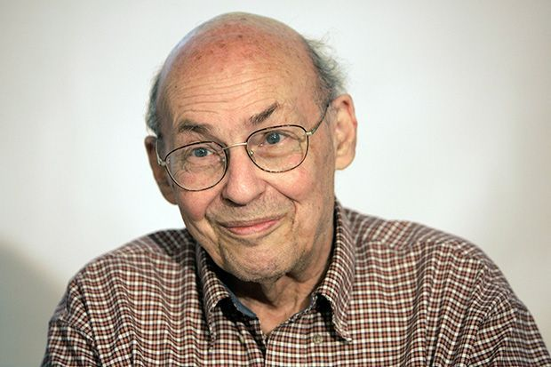

マービン・ミンスキー
"人間レベルの知能の大きな特徴は、それが機能しているときに何をするかではなく、行き詰まったときに何をするかです。"

紹介
マサチューセッツ工科大学の人工知能研究所の創設者の1人。
シーモア・パパートとの共著『パーセプトロン』は、ニューラルネットワーク解析の基礎を築いた。
発言
"複数の方法で学ばなければ、何も理解できません。"
"人工知能とは、人間が行うには知能が必要となるようなことを機械に実行させる科学です。"
"何かを一つの方法でしか理解できないなら、それは本当に理解していないということです。私たちにとって何かが何を意味するのかの秘密は、それを私たちが知っている他のすべてのものとどのように結びつけているかにかかっています。よく結びついた表現は、頭の中で考えを巡らせ、自分に合った視点を見つけるまで、物事を様々な視点から思い描くことを可能にします。そして、それが思考するということです！"
"そもそも知性とは一体何でしょうか？それは、私たちの脳が難問を解く際に用いる未知のプロセスを指す言葉に過ぎません。しかし、自分で何かのスキルを習得すると、他の人が同じことをしても、それほど感銘を受けたり、不思議に思ったりすることはなくなります。だからこそ、「知性」の意味は捉えどころのないものに思えるのです。知性は、何か明確なものを表すのではなく、心がどのように機能するかについての私たちの無知の、ほんの一瞬の境地を表すだけなのです。"
エピソード
シーモア・パパートとの共著『パーセプトロン』は、ニューラルネットワーク解析の基礎を築いた。
人生
マービン・リー・ミンスキーは、ニューヨーク市で父は医者で母はシオニズム運動家
というユダヤ人家庭に生まれ、ブロンクス科学高等学校に進学した後、
マサチューセッツ州アンドーバーのフィリップス・アカデミーに転校した。
そして、1944年から1945年まで、アメリカ海軍で兵役に就いた。
ハーバード大学で数学を学び、1950年に卒業した。
その後、1954年にはプリンストン大学で数学の博士号を得た。
1958年以降、マサチューセッツ工科大学（MIT）に所属している。
1959年、ジョン・マッカーシーと共にMITコンピュータ科学・人工知能研究所の前身となる研究所を創設。